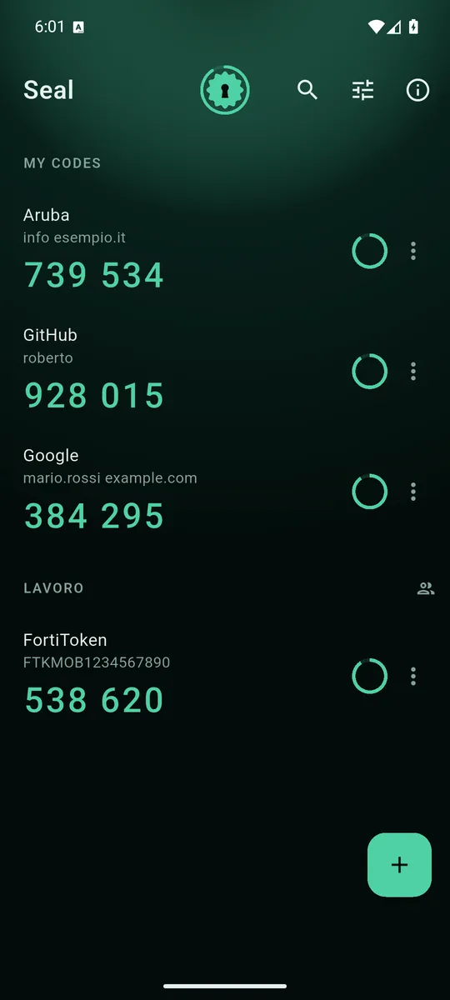
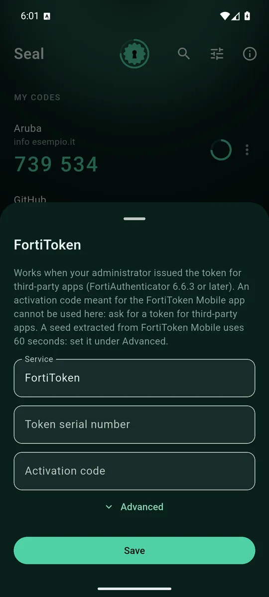
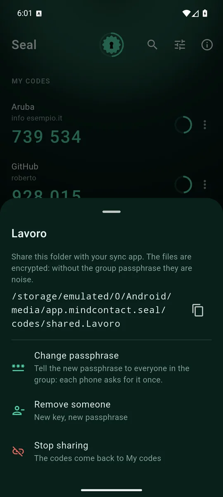
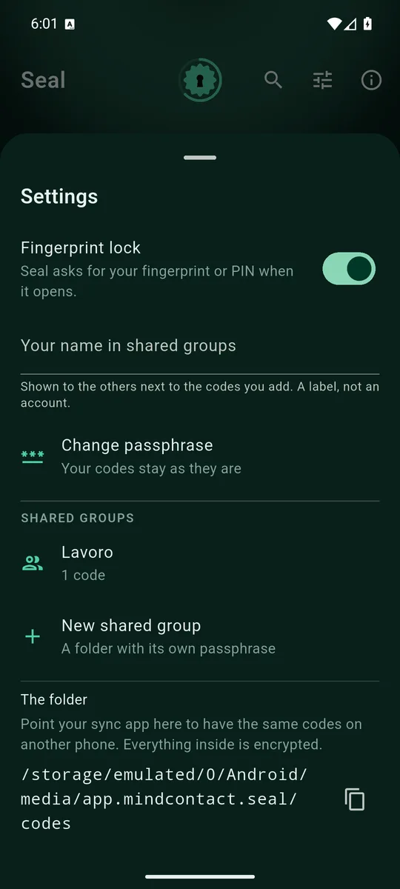

ItalianoEnglish
Seal fa quello che fanno Authy e Google Authenticator: genera i codici a sei cifre che i servizi chiedono dopo la password. Ma i segreti da cui nascono stanno in file cifrati con una passphrase tua, e non passano da nessun server: né nostro, né di altri.
La prima schermata sono i codici. Un tocco li copia, e dopo trenta secondi escono dagli appunti. Il sigillo in alto segna il tempo della finestra, e i codici si scaldano verso l'ambra quando stanno per cambiare: si capisce a colpo d'occhio se conviene aspettare il prossimo.

I codici, divisi fra i tuoi e quelli dei gruppi che condividi. 
FortiToken emessi per app di terze parti: numero di serie e codice di attivazione. 
Un gruppo è una cartella con la sua passphrase. La consegna il sincronizzatore che usi già. 
Impronta all'apertura, attiva di default. Tutto il resto sta qui.
Cosa fa
- Codici TOTP e HOTP standard, a 6 o 8 cifre, con SHA1, SHA256 o SHA512: quelli di Google, Microsoft, GitHub, delle banche e di quasi tutto il resto.
- Si aggiungono inquadrando il QR del servizio, incollando
il link
otpauth://o scrivendo la chiave a mano. - Da Google Authenticator si passa in un colpo: il QR di esportazione porta fino a dieci codici alla volta.
- FortiToken: funziona quando l'amministratore emette il token per app di terze parti (FortiAuthenticator 6.6.3 o successivo).
- In italiano e in inglese, secondo la lingua del telefono.
Cifrati davvero
Ogni codice è un file cifrato con una chiave casuale, e quella chiave è cifrata con la tua passphrase. La passphrase non si salva da nessuna parte: la scrivi una volta, e il telefono tiene la chiave aperta nel suo Keystore, dietro la tua impronta. La scrivi di nuovo solo su un telefono nuovo.
Il rovescio della medaglia va detto chiaro: se perdi la passphrase e il telefono, i codici sono persi. Non c'è un recupero via SMS, perché non c'è nessuno che possa farlo. Scrivila su un foglio e tienila con i documenti.
Condivisi senza account
Gli stessi codici su due telefoni, o in ufficio fra colleghi: un gruppo è una sottocartella con una passphrase sua. La cartella la consegni con quello che usi già — Syncthing, Mega, Drive — e la passphrase la dici a voce, o su un foglio. Chi riceve il gruppo lo vede chiuso finché non la scrive.
Sul server di sincronizzazione arrivano solo file cifrati: chi li ospita vede quanti sono e il nome del gruppo, non i codici. Per togliere qualcuno da un gruppo Seal crea una chiave nuova, riscrive i codici con quella, e tu dici la passphrase nuova solo a chi resta.
Da Authy
Authy non permette di esportare i codici. Passare a Seal vuol dire riattivare la verifica in due passaggi su ogni servizio, uno alla volta: disattivi, riattivi, inquadri il QR con Seal. È noioso una volta, e poi i codici sono tuoi.
Come si paga
Con un banner ancorato in fondo, e basta: nessun annuncio a schermo intero, perché chi apre Seal sta facendo un accesso con il tempo che corre. Né i codici né i loro nomi arrivano alla rete pubblicitaria.
Dove trovarla
Seal su Google Play. Richiede Android 7 o successivo.